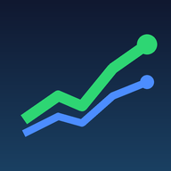

Trade Twin
Try as a guest — no login, email or quiz required.
An investing and day-trading companion that replays 10,000 futures before you risk a dollar — matched to your personality.
- Personality test — 10 questions score your risk tolerance (1–5) and investor-vs-trader style, pick one of four types and set your guard-rails (max loss per trade, daily stop, reward:risk).
- Goal planner — 10,000 simulated futures for your funds, monthly contributions and goal, built from real monthly total-return history (block bootstrap). Warns when history is too short to be honest.
- Paper trading — fractional practice trades at real delayed prices, with a portfolio chart (Robinhood / Webull style).
- Copy a famous investor — reads a fund's latest SEC 13F (Buffett, Burry, Ackman…), shows what changed, copies it into your practice portfolio (eToro style, from public filings).
- Day-trade checklist — entry → exit → Time Machine (10,000 replays + history) → size → risk → ticket, powered by the open-source day-trader-skill.
- News feed, watchlist with sparklines, a built-in guide and help on every screen.
This web build runs entirely in your browser on a saved data snapshot (prices, 13F filings, news, a real TSLA trading morning).
Run
python apps/trade-twin/server.py --lan for live data on your own phone. Practice money only — never places real orders. Not financial advice.
Built on Jake Schincariol's MIT-licensed
day-trader-skill and
trader-skill.